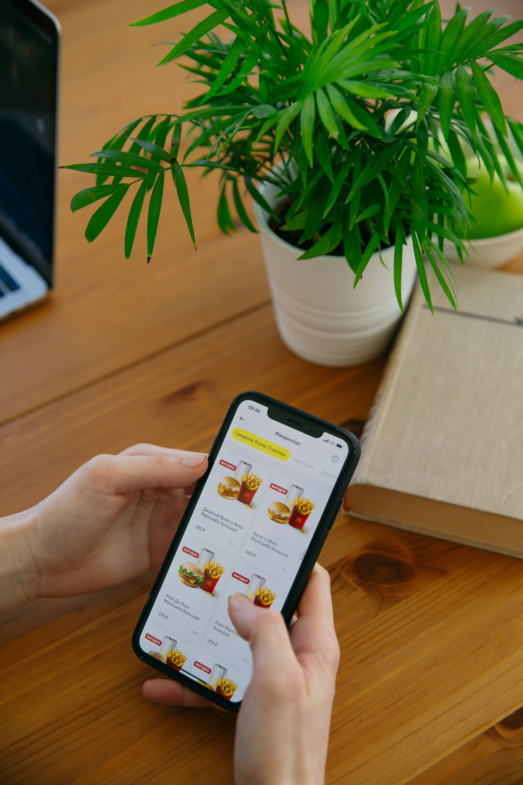
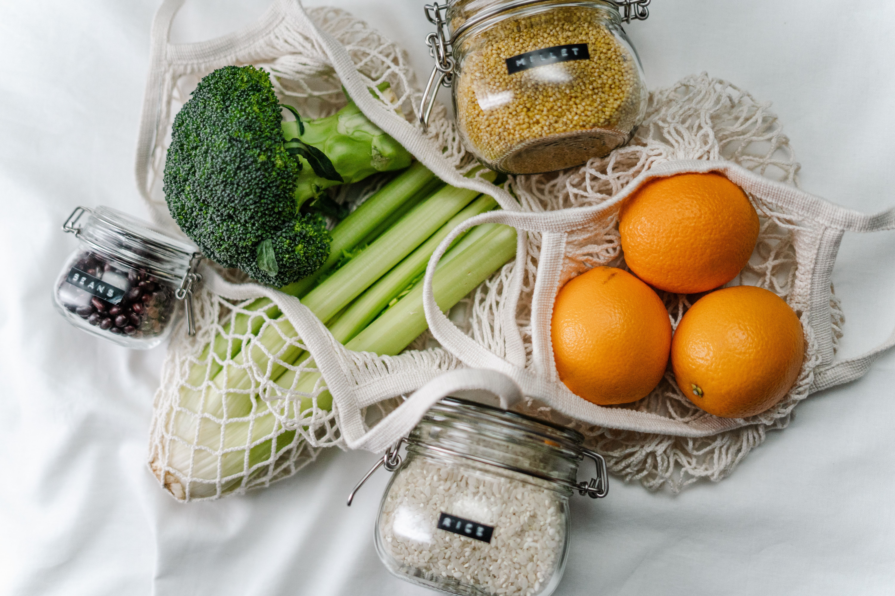
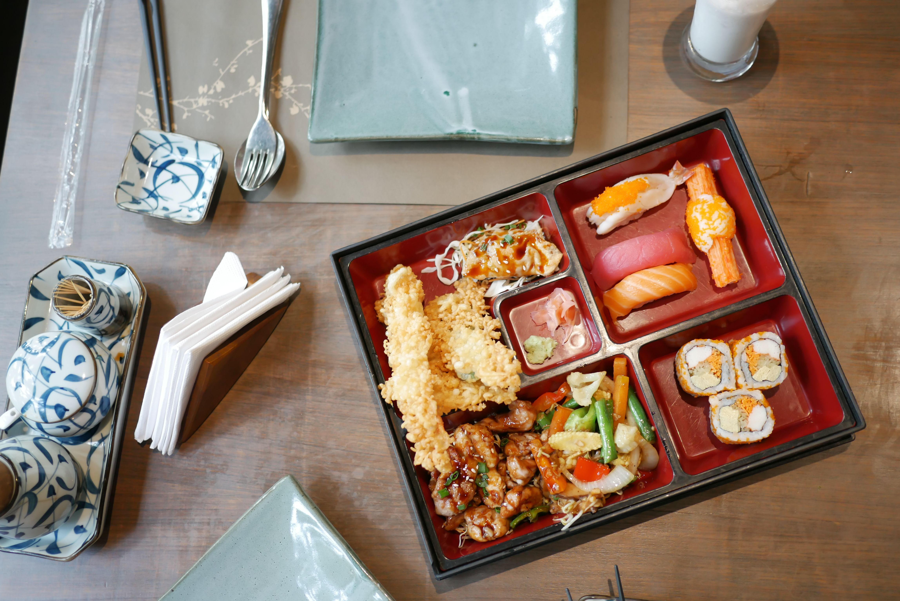

Easy Reservations
Find your favorite meals and explore our simple reservation process.
Good food shouldn't go to waste. Discover delicious surplus meals at around 70% off. Affordable food for everyone, a better future for all.
Find Food Learn MoreFoodBridge connects local food businesses with everyone looking for affordable meals. We believe good food should be accessible to all, regardless of age, occupation, or background.

Find your favorite meals and explore our simple reservation process.

Enjoy surplus food at approximately 70% off the original price. Everyone is welcome.

Make responsible food choices, support local businesses, and reduce unnecessary food waste.

Food should bring people together, not go to waste.
Our mission is to make affordable food accessible to everyone while helping local businesses reduce unnecessary food waste.
Together, we can build a more inclusive and sustainable food community.
Explore FoodDiscover delicious surplus food at around 70% off the original price. Great food, better prices, and less waste.
Everyone is welcome. Explore our sample menu and reservation preview. No actual orders or payments are processed.
Discover surplus food from local bakeries and eateries.
Select your favorite meal and enjoy approximately 70% off.
Preview the simple online reservation process.
Once ordering launches, collect your meal during the scheduled pickup period.
Explore the potential environmental and financial benefits of saving surplus food.
Meals Selected
Potential Food Waste Avoided
Estimated Savings

Supporting access to affordable food for everyone and raising awareness of food insecurity.

Encouraging responsible consumption and reducing unnecessary food waste.
Support local businesses and discover affordable food for everyone.

Bakery
Explore Food
Bread & Pastries
Explore Food
Bento & Rice Meals
Explore FoodGive surplus food a second chance. Offer affordable meals, reduce food waste, and connect with your local community.
Get in TouchQuestions, ideas or partnership opportunities? We welcome everyone.